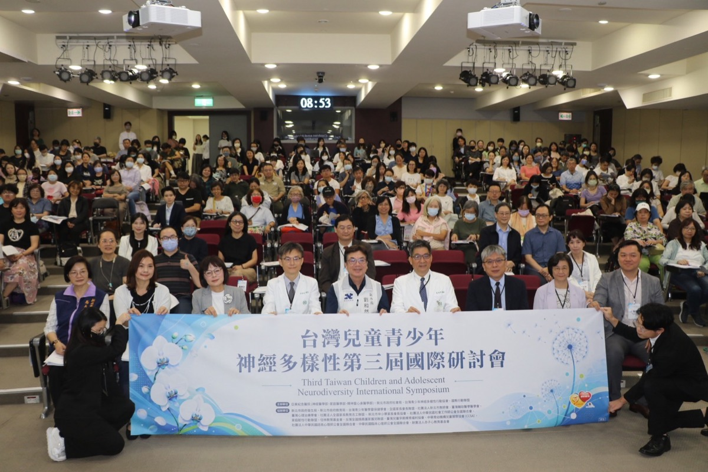
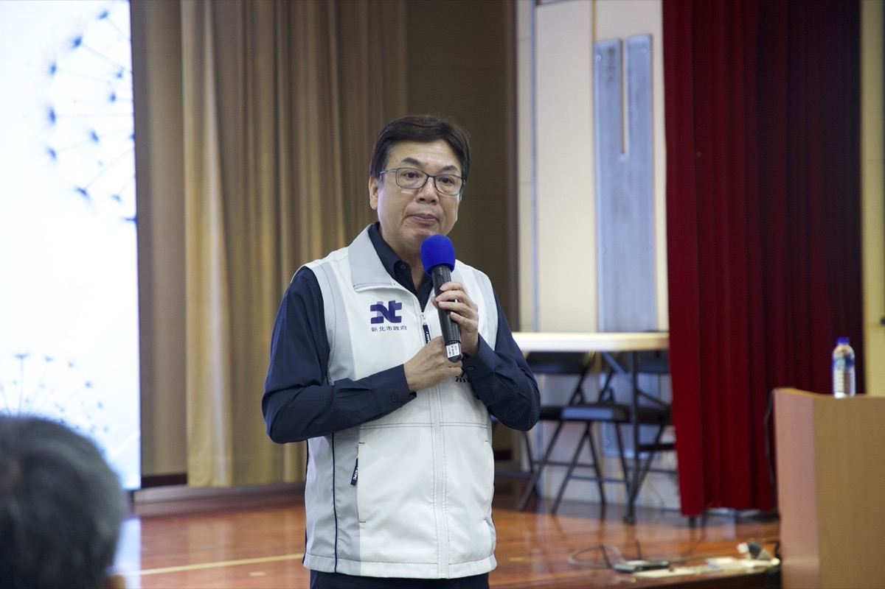
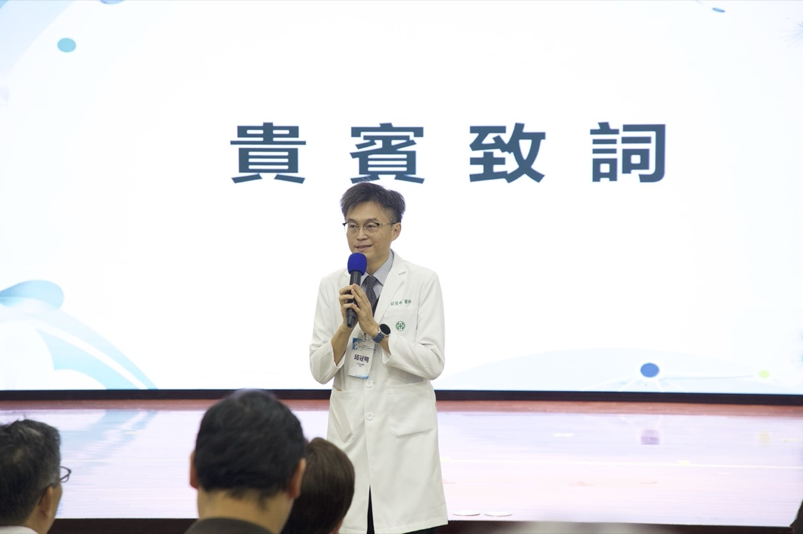
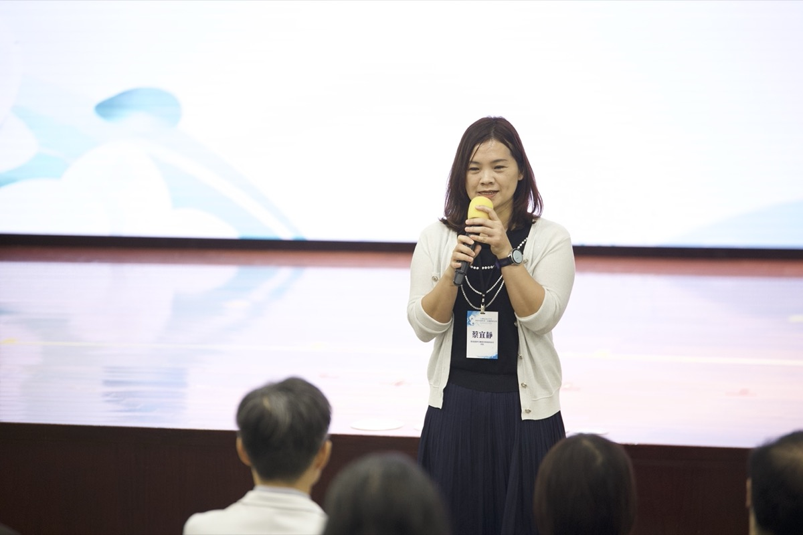
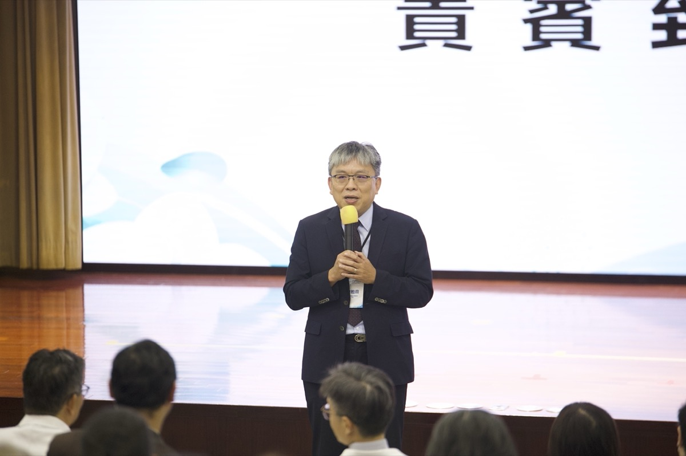
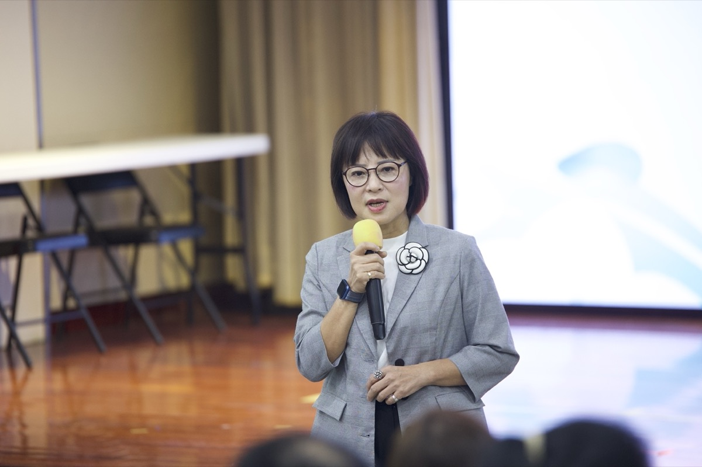

台灣兒童青少年神經多樣性第三屆國際研討會
2026年9月12日（星期六）｜亞東紀念醫院南棟14樓國際會議廳
議程
- 開幕致詞 未錄音開幕致詞劉和然副市長、邱冠明院長（亞東紀念醫院）、蔡宜靜司長（教育部學生事務及特殊教育司）、陳柏熹司長（衛生福利部心理健康司）、林月琴立法委員全天議程從主辦單位與貴賓的開幕致詞開始。
- 第 1 場 未錄音神經多樣性的概念與演化Dr. Raymond Sui-Hing Yan 甄瑞興醫師神經多樣性不是一種病，是一個總稱——底下的才是真正的診斷。
- 第 2 場理解家庭中神經多樣性兒童青少年林育如醫師孩子的不聽話，背後常是神經調節困難，不是故意挑釁。
- 第 3 場從心理健康支持到生活陪跑師：日常生活技能的培養Barry Fell治療處理卡住的地方，陪跑補上還沒長出來的能力。
- 第 4 場神經多樣性卓越臨床照護實務Drew Davis同樣的診斷，可能來自完全不同的原因；先看懂，再談治療。
- 上午綜合座談綜合討論（上午場）綜合座談四張提問單、五組問答，從教室裡的做法一路問到支持系統。
- 第 5 場自閉症、神經多樣性與社區歸屬感：社區心理學的視角Dr. Toshiaki Sasao 笹尾敏明一個診斷，說明不了一個人；服務到位，也不保證有歸屬感。
- 第 6 場住宿型治療機構的日常運作與照護實務Barry Fell住宿型治療不是整天坐在治療室，而是把一整天的生活都做成治療。
- 第 7 場信息處理方法的諮商實務Drew Davis先把情緒降下來再教技能；模式不是標籤，是在告訴你缺哪一項能力。
- 第 8 場如何提升諮商治療的參與及效益Barry Fell從治療裡能拿到多少，關鍵在來談的人自己帶了什麼進來。
- 第 9 場如何透過關係、理解和技能發展影響青少年Drew Davis決定怎麼回應的不是孩子做了什麼，而是他當下的身體狀態。
- 下午綜合座談綜合討論（下午場）綜合座談五個問題，從要不要說出診斷，一路問到生活陪跑師怎麼申請。
- 閉幕 未錄音閉幕議程未列閉幕致詞者姓名全天議程在下午綜合座談之後閉幕。
活動花絮






下載
關於本站
- 主辦單位
- 亞東紀念醫院神經醫學部、家庭醫學部、精神暨心身醫學部、新北市政府社會局、台灣青少年神經多樣性行動協會、國教行動聯盟
- 本盟角色
- 國教行動聯盟（民間團體）為主辦單位之一。
- 聯絡窗口
- 國教行動聯盟（民間團體）｜aabe.org.tw
- 回到研討會活動頁 →